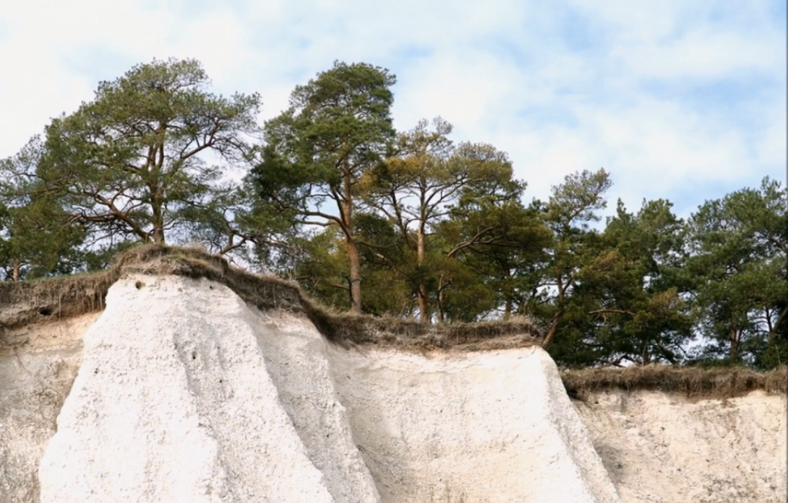
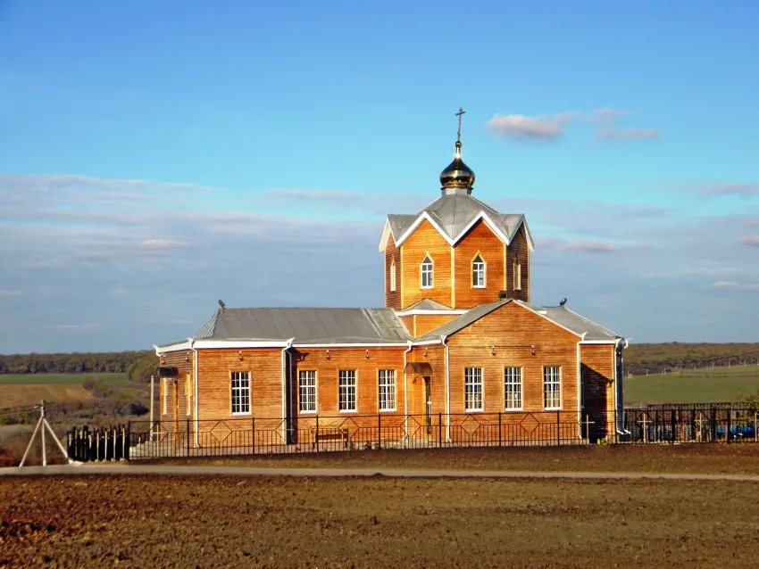
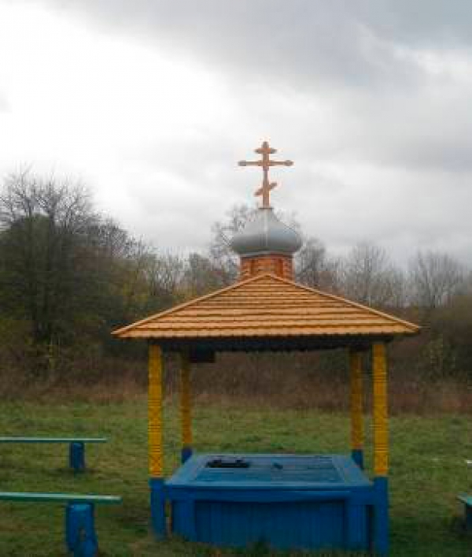
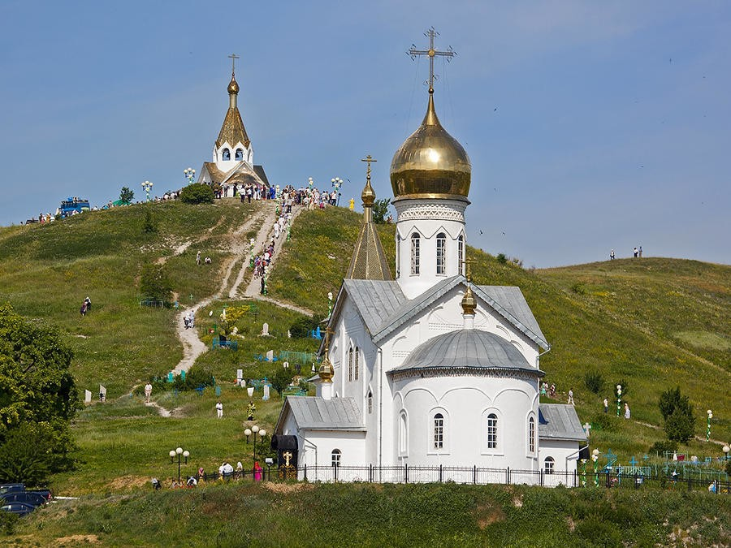
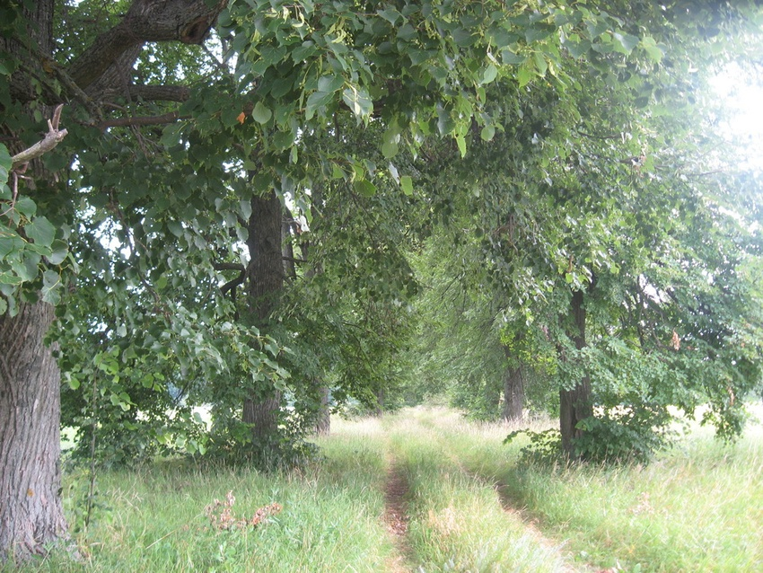

Привет!
Здесь собраны некоторые интересные места, — для экотуризма в Чернянском районе. С фотографиями, кратким описанием и историей.

Ботанический заказник «Меловые сосны»

Покровская церковь в селе Захарово

Святой родник «Десятый колодец»
Чернянская плотина «ГЭС», Морквино

Свято-Троицкий Холковский монастырь

Урочище «Липовая аллея на х. Коммуна»